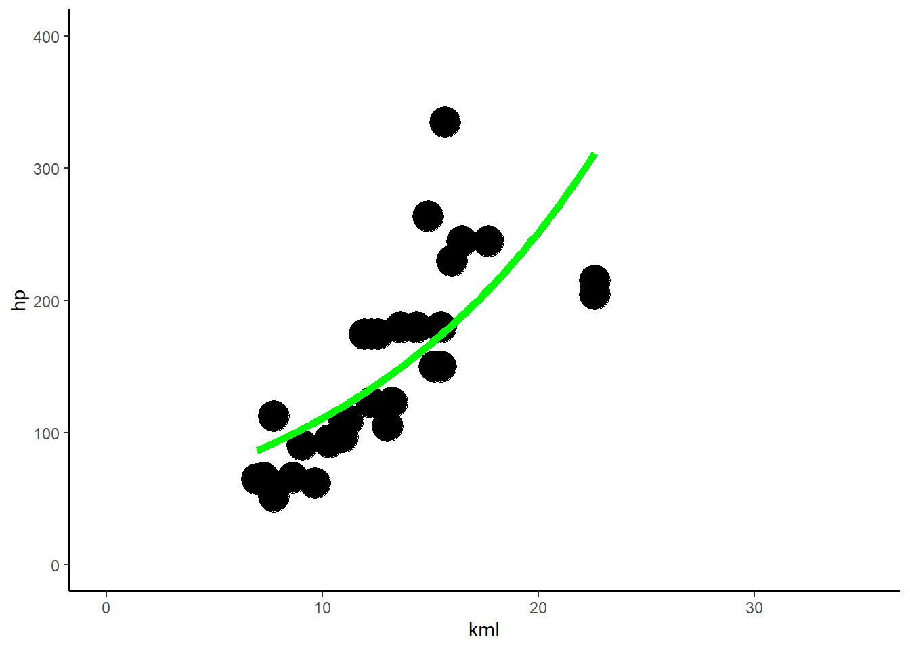
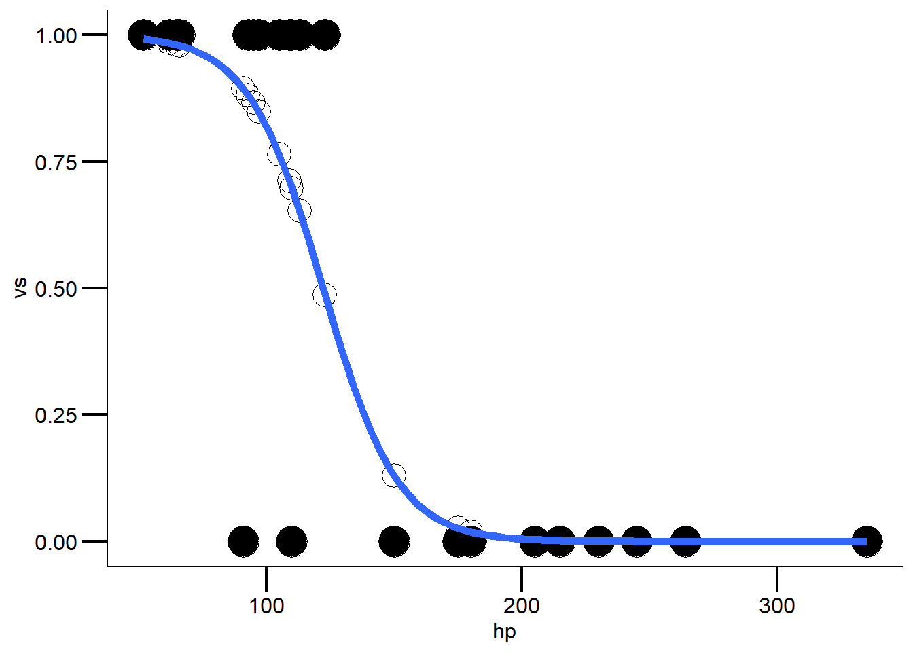
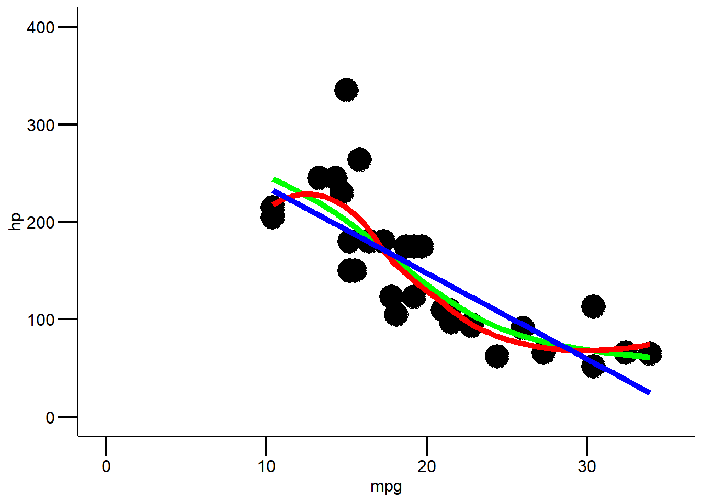
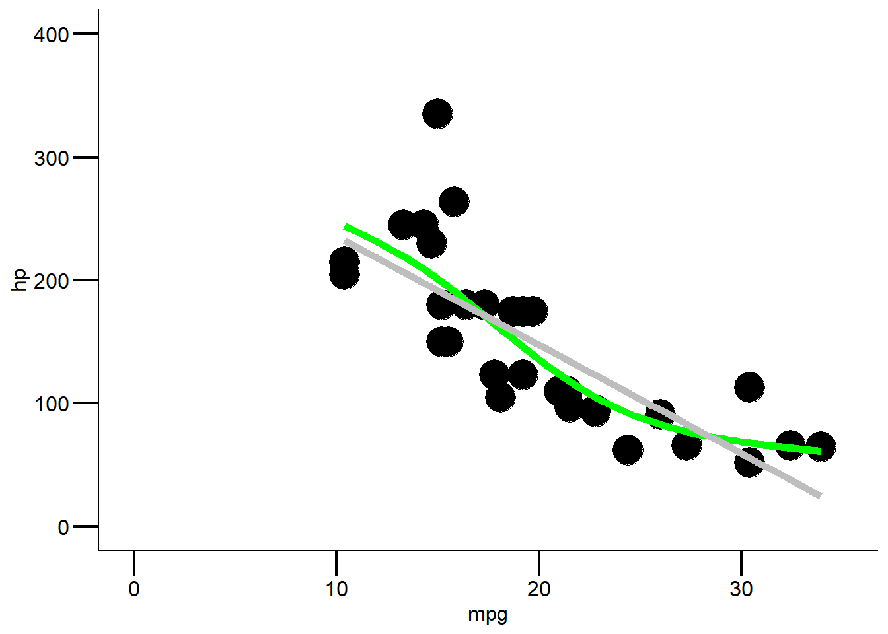

StatKons4: Demo
Download R-Skript
library(tidyverse)
mytheme <-
theme_classic() +
theme(
axis.line = element_line(color = "black"),
axis.text = element_text(size = 12, color = "black"),
axis.title = element_text(size = 12, color = "black"),
axis.ticks = element_line(size = .75, color = "black"),
axis.ticks.length = unit(.5, "cm")
)Poisson Regression
############
# quasipoisson regression
############
cars <- mtcars %>%
mutate(kml = (235.214583/mpg))
glm.poisson <- glm(hp ~ kml, data = cars, family = "poisson")
summary(glm.poisson) # klare overdisperion
##
## Call:
## glm(formula = hp ~ kml, family = "poisson", data = cars)
##
## Deviance Residuals:
## Min 1Q Median 3Q Max
## -6.438 -2.238 -1.159 2.457 10.576
##
## Coefficients:
## Estimate Std. Error z value Pr(>|z|)
## (Intercept) 3.894293 0.050262 77.48 <2e-16 ***
## kml 0.081666 0.003414 23.92 <2e-16 ***
## ---
## Signif. codes: 0 '***' 0.001 '**' 0.01 '*' 0.05 '.' 0.1 ' ' 1
##
## (Dispersion parameter for poisson family taken to be 1)
##
## Null deviance: 958.27 on 31 degrees of freedom
## Residual deviance: 426.59 on 30 degrees of freedom
## AIC: 645.67
##
## Number of Fisher Scoring iterations: 4
# deshalb quasipoisson
glm.quasipoisson <- glm(hp ~ kml, data = cars, family = quasipoisson(link = log))
summary(glm.quasipoisson)
##
## Call:
## glm(formula = hp ~ kml, family = quasipoisson(link = log), data = cars)
##
## Deviance Residuals:
## Min 1Q Median 3Q Max
## -6.438 -2.238 -1.159 2.457 10.576
##
## Coefficients:
## Estimate Std. Error t value Pr(>|t|)
## (Intercept) 3.89429 0.19508 19.963 < 2e-16 ***
## kml 0.08167 0.01325 6.164 8.82e-07 ***
## ---
## Signif. codes: 0 '***' 0.001 '**' 0.01 '*' 0.05 '.' 0.1 ' ' 1
##
## (Dispersion parameter for quasipoisson family taken to be 15.06438)
##
## Null deviance: 958.27 on 31 degrees of freedom
## Residual deviance: 426.59 on 30 degrees of freedom
## AIC: NA
##
## Number of Fisher Scoring iterations: 4
# visualisiere
ggplot2::ggplot(cars, aes(x = kml, y = hp)) +
geom_point(size = 8) +
geom_smooth(method = "glm", method.args = list(family = "poisson"), se = F,
color = "green", size = 2) +
scale_x_continuous(limits = c(0,35)) +
scale_y_continuous(limits = c(0,400)) +
theme_classic()
#Rücktransformation meines Outputs für ein besseres Verständnis
glm.quasi.back <- exp(coef(glm.quasipoisson))
#für ein schönes ergebnis
glm.quasi.back %>%
broom::tidy() %>%
knitr::kable(digits = 3)| names | x |
|---|---|
| (Intercept) | 49.121 |
| kml | 1.085 |
#for more infos, also for posthoc tests
#here: https://rcompanion.org/handbook/J_01.html
logistische Regression
############
# logistische regression
############
cars <- mtcars
# erstelle das modell
glm.binar <- glm(vs ~ hp, data = cars, family = binomial(link = logit))
#achtung Model gibt Koeffizienten als logit() zurück
summary(glm.binar)
##
## Call:
## glm(formula = vs ~ hp, family = binomial(link = logit), data = cars)
##
## Deviance Residuals:
## Min 1Q Median 3Q Max
## -2.12148 -0.20302 -0.01598 0.51173 1.20083
##
## Coefficients:
## Estimate Std. Error z value Pr(>|z|)
## (Intercept) 8.37802 3.21593 2.605 0.00918 **
## hp -0.06856 0.02740 -2.502 0.01234 *
## ---
## Signif. codes: 0 '***' 0.001 '**' 0.01 '*' 0.05 '.' 0.1 ' ' 1
##
## (Dispersion parameter for binomial family taken to be 1)
##
## Null deviance: 43.860 on 31 degrees of freedom
## Residual deviance: 16.838 on 30 degrees of freedom
## AIC: 20.838
##
## Number of Fisher Scoring iterations: 7
# überprüfe das modell
cars$predicted <- predict(glm.binar, type = "response")
# visualisiere
ggplot(cars, aes(x = hp, y = vs)) +
geom_point(size = 8) +
geom_point(aes(y = predicted), shape = 1, size = 6) +
guides(color = "none") +
geom_smooth(method = "glm", method.args = list(family = 'binomial'),
se = FALSE,
size = 2) +
# geom_smooth(method = "lm", color = "red", se = FALSE) +
mytheme
#Modeldiagnostik (wenn nicht signifikant, dann OK)
1 - pchisq(glm.binar$deviance,glm.binar$df.resid)
## [1] 0.9744718
#Modellgüte (pseudo-R²)
1 - (glm.binar$dev / glm.binar$null)
## [1] 0.6161072
#Steilheit der Beziehung (relative Änderung der odds von x + 1 vs. x)
exp(glm.binar$coefficients[2])
## hp
## 0.9337368
#LD50 (wieso negativ: weil zweiter koeffizient negative steigung hat)
abs(glm.binar$coefficients[1]/glm.binar$coefficients[2])
## (Intercept)
## 122.1986
# kreuztabelle (confusion matrix): fasse die ergebnisse aus predict und
# "gegebenheiten, realität" zusammen
tab1 <- table(cars$predicted>.5, cars$vs)
dimnames(tab1) <- list(c("M:S-type","M:V-type"), c("T:S-type", "T:V-type"))
tab1
## T:S-type T:V-type
## M:S-type 15 2
## M:V-type 3 12
prop.table(tab1, 2)
## T:S-type T:V-type
## M:S-type 0.8333333 0.1428571
## M:V-type 0.1666667 0.8571429
#was könnt ihr daraus ablesen? Ist unser Modell genau?
# Funktion die die logits in Wahrscheinlichkeiten transformiert
# mehr infos hier: https://sebastiansauer.github.io/convert_logit2prob/
# dies ist interessant, falls ihr mal ein kategorialer Prädiktor habt
logit2prob <- function(logit){
odds <- exp(logit)
prob <- odds / (1 + odds)
return(prob)
}
GAM’s
###########
# LOESS & GAM
###########
ggplot2::ggplot(mtcars, aes(x = mpg, y = hp)) +
geom_point(size = 8) +
geom_smooth(method = "gam", se = F, color = "green", size = 2, formula = y ~ s(x, bs = "cs")) +
geom_smooth(method = "loess", se = F, color = "red", size = 2) +
geom_smooth(method = "glm", size = 2, color = "blue", se = F) +
scale_x_continuous(limits = c(0,35)) +
scale_y_continuous(limits = c(0,400)) +
mytheme
ggplot2::ggplot(mtcars, aes(x = mpg, y = hp)) +
geom_point(size = 8) +
geom_smooth(method = "gam", se = F, color = "green", size = 2, formula = y ~ s(x, bs = "cs")) +
# geom_smooth(method = "loess", se = F, color = "red", size = 2) +
geom_smooth(method = "glm", size = 2, color = "grey", se = F) +
scale_x_continuous(limits = c(0,35)) +
scale_y_continuous(limits = c(0,400)) +
mytheme
